-
I've been work on this project to put my set of 1987 5-lug turbo wheels on my 1985NA 4 lug car …
I bought a set to 4-5 hubcentric adapters …
Problems in getting there are
1 ( one lug has to be replaced with a long replacement adapter lug … ( so it looks like I need to pull hubs to replace the lug …
Is it possible to replace lugs without removing ?
2 offset seems to be too much …
Has anyone done this before ? ( I sure someone has )
Here are some pics :
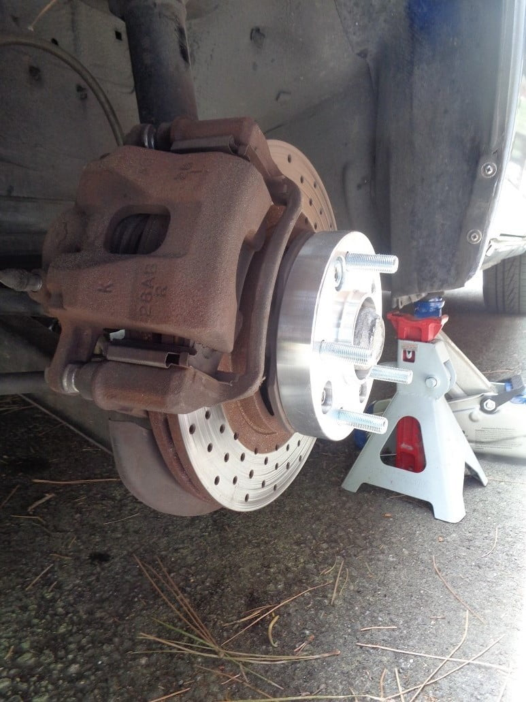
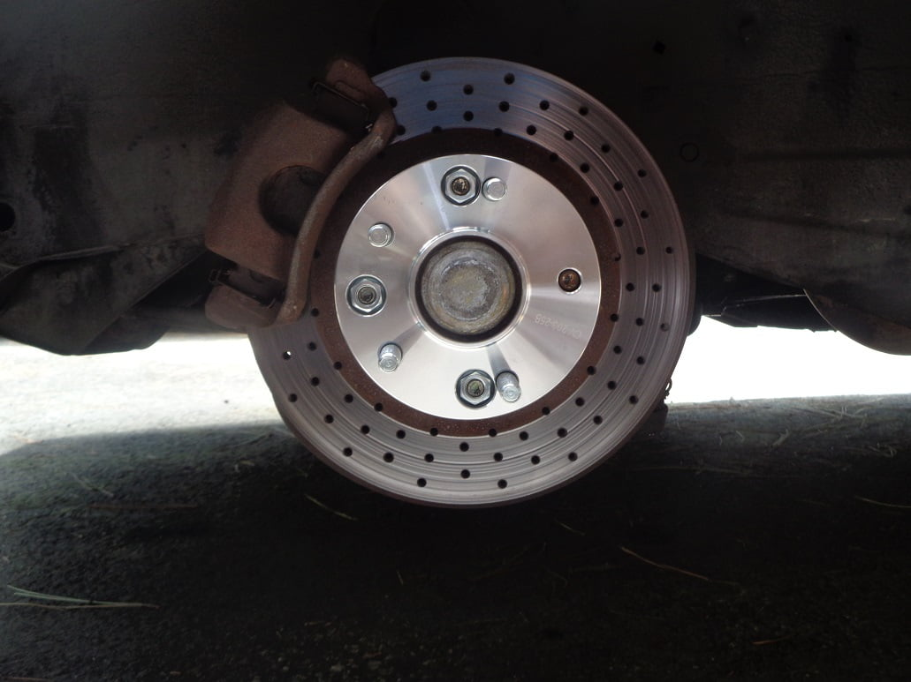
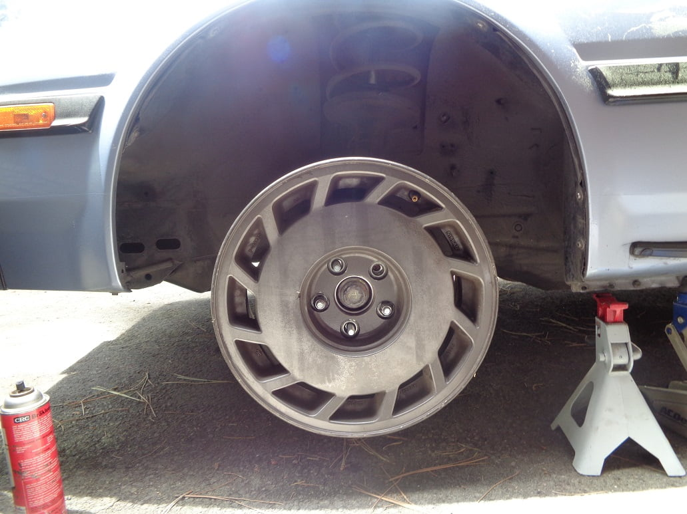
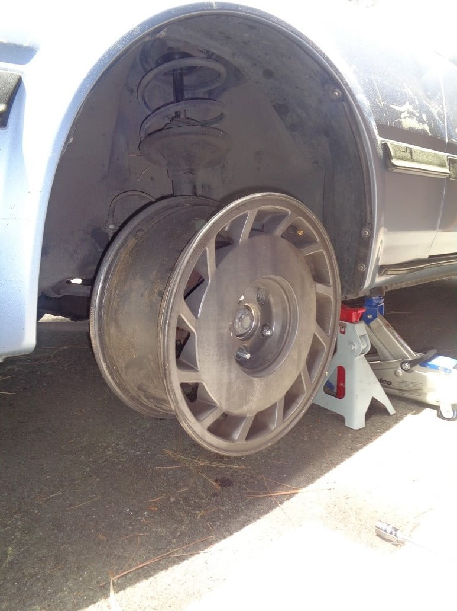
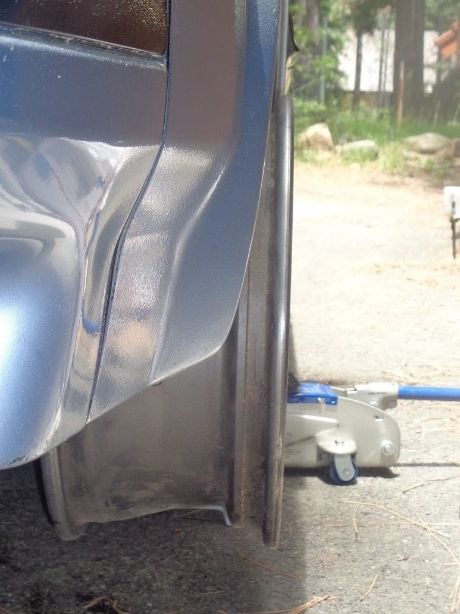Last edited by dbruce; 06-28-2020, 06:02 PM. -
Sort of answering my own question : So he cuts an access hole on the rotor dust shield … seems to answer the problem …
https://www.youtube.com/watch?v=WDFufYrY2zQ
Z31 Extended Wheel Studs
Published on Jun 29, 2018
The time has finally come for me to get around to doing this job. The stock wheel studs on my 85 Z are barely long enough to hold a wheel on, so today we are upgrading to Nismo 60mm studs front and rear with new Muteki SR48 lugs!
Link to Nismo studs: https://www.thezstore.com/page/TZS/PR…
Check us out on social media:
Facebook: https://www.facebook.com/Turbocharged…
Instagram: https://www.instagram.com/turbocharge…
-
I always wanted to do that, wish I had seen your method of using a spacer approach before I bought my new wheels, oh well. Good luck with the final approach! -
FYI … I just bought new tires for the 5 lug project … Buying Michelin Pilots … notice the words "UP TO " in the rebate promotion … So 90 dollars discount ( over 500)
But the Pilots I bought I got on sale … discontinued model .. y-rated …
235/45ZR-17 Michelin Pilot Sport A/S 3+ (W- or Y-Speed Rated (Qty:4) $126.66
https://www.tirerack.com/specialoffe…p?promoID=M041
Get Up to $150 Back from Michelin? & BFGoodrich?
Ends July 6 (5 Days Left!)
For a limited time, bundle purchases of at least two new MICHELIN? or BFGoodrich? passenger or light truck tires and you can get up to a $150 Visa? Reward Card1 after online submission. You may also include select Michelin Motorcycle, Scooter and UTV tires, and select Michelin bicycle tires not sold by Tire Rack to reach any rebate level. Visit www.MichelinMan.com/promotion for a list of participating dealers. Offer valid on tires purchased from Tire Rack’s in-stock inventory between 12:00 a.m. EDT June 27, 2020 and 11:59 p.m. EDT July 6, 2020.
[img]https://www.tirerack.com/images/prom…X031_chart.jpg[/img]Last edited by dbruce; 07-13-2020, 11:13 PM. -
Those are great tires for sure, I ran those on my Q45 and they are excellent tires, you will love them. I ran RE71 Bridgestone also picked up on sale, I only trust Briidgestone and Michelin, everything else is an inferior choice. -
Well It took some time but my 87 wheels have been refinished … and I have the new tires mounted … I ended up with Mich pilot AS4's
Michelin 225/50 zr 16 , a speed rated tire …
anyway the test fitting looks good ,,, I have a set of new Eibach lowering springs that I'm going to install and with a 1-2 inch drop It will look pretty good …
Several issues mainly the 60mm stud that has to go in … I'm doing brake pads and rotors in the process of this . So removing the hub is part of the process
Also in case I need to put the stock 85 wheels back on after all this is done will require one open lug on each wheel that fits on the old wheels .
The fronts should be no problem , I need to cut the access hole on the back dust shields to do the stud there Oh what fun …
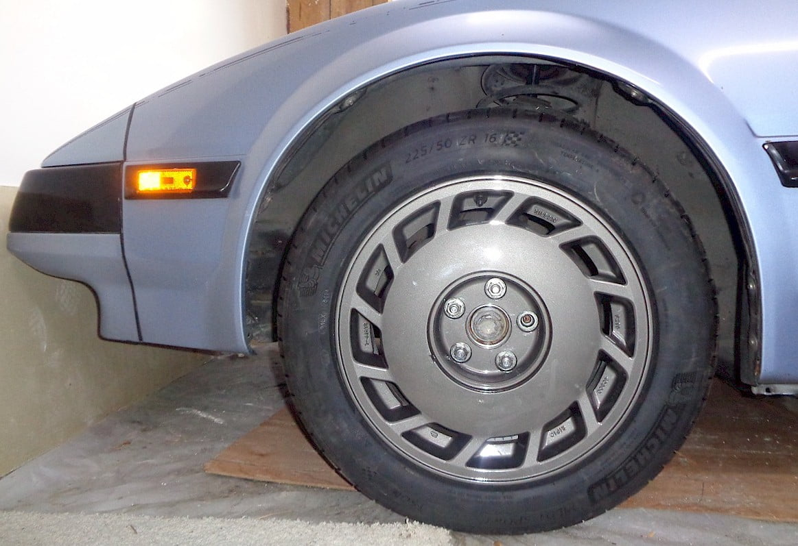
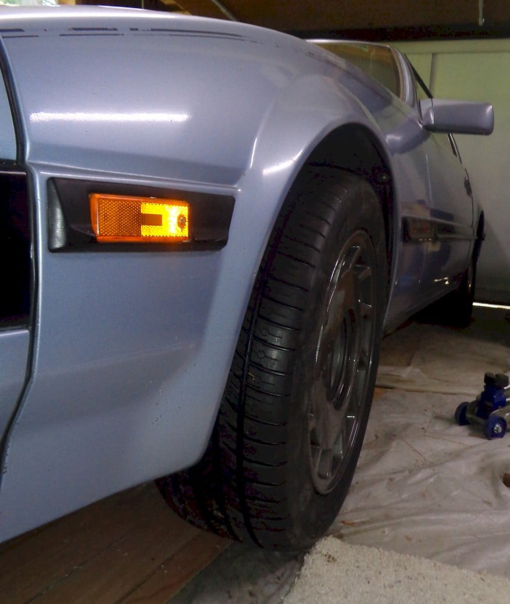Last edited by dbruce; 08-11-2021, 10:25 AM. -
The extended studs supplied with the kit had a non fluted stud ,,, So I'm ordering 60mm extend stud from here : 40 bucks more money … ( I only need 4 but have to buy 10 …)
https://responsetype.com/shop/nissan…mm-studs-13mm/
60mm Extended Wheel Studs [12.9-13mm knurl]
Description
Direct replacement for all Nissan/Infiniti wheel studs. Made from high strength cromoly, zinc plated for corrosion resistance, and tempered to be safe for use with aluminum lugnuts.
Cross-references with Nismo catalog part number: 40222-RS025Last edited by dbruce; 07-15-2020, 10:54 AM. -
Tough project, it will look way better with the new springs, I did that a long time ago and much prefer the stance now lowered by 1.5" -
Well I finally finished … new rotors new pads and I ended up having to get even longer wheel studs … ( I post the source ,later , ) to make the adapters work
I also found a clean way to cut the rear brake back plate ,,, I have eibach lowering springs to do but I want to bed the pads first …
https://www.enjukuracing.com/product…san-240sx.html
ISR Performance 70mm Long Wheel Stud for the Nissan 240sx
ISR Performance 70mm long wheel studs replaces the factory studs with longer studs that can be used with added wheel spacers and open ended lug nuts. Made for factory Nissan hub knurl Only. These 70mm long wheel studs are an improvements over the OEM wheel studs. Utilizing stronger heat treated materials and coating for extended strength and durability.
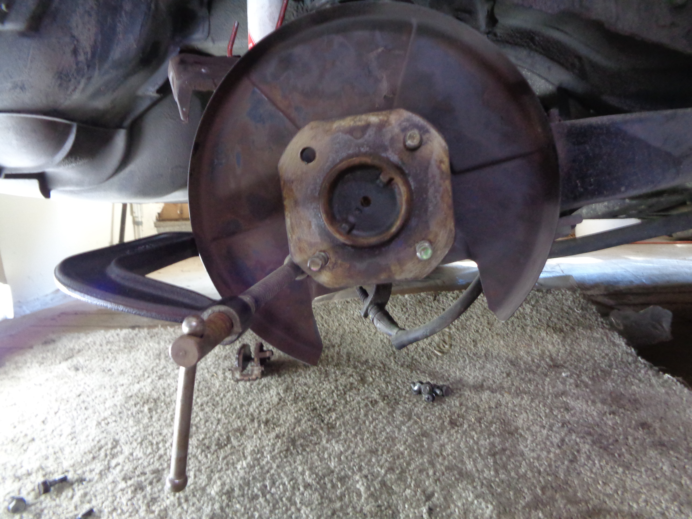
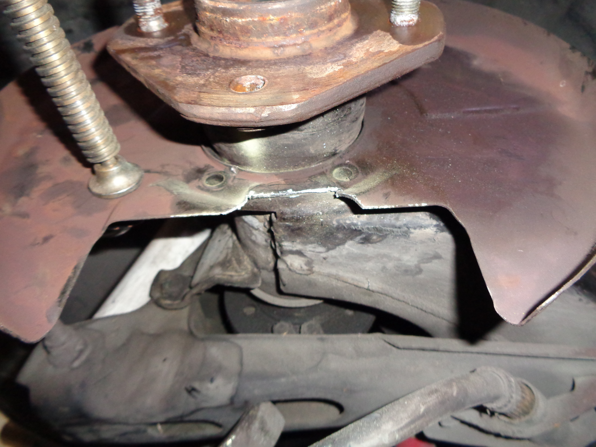
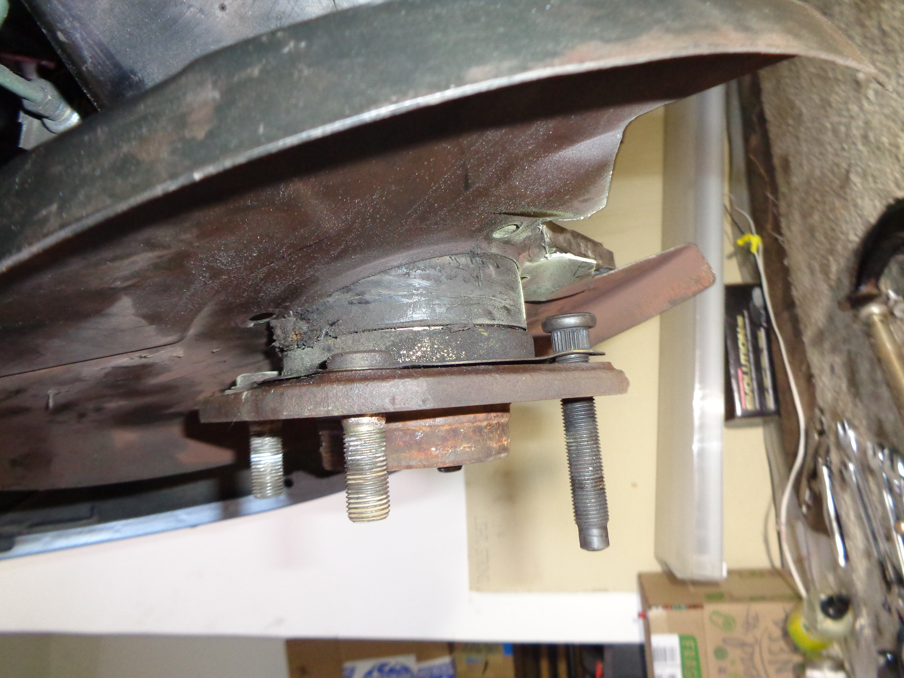
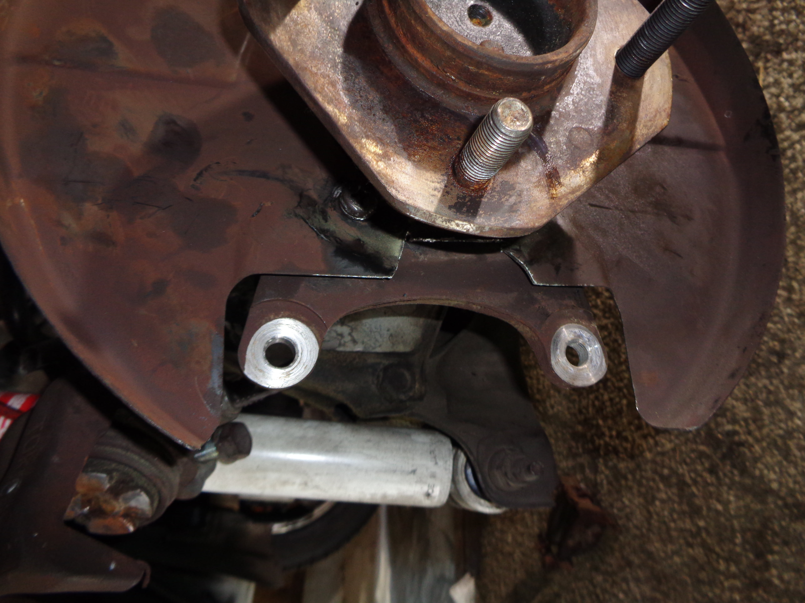
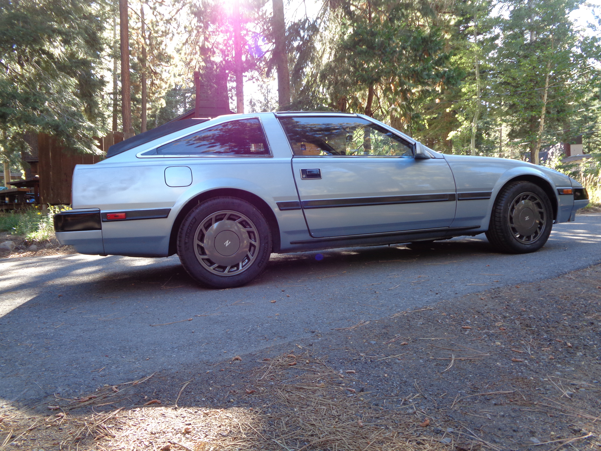Last edited by dbruce; 08-06-2021, 10:26 AM. -
Wow revived an old thread glad to see your still driving to get progress. -
I live in the snow six months a year … I needed the 70mm studs to finish , had to wait for them and the garage got to freezing time … .
So far my impressions are that the tracking is much improved … the added widening and the lower profile turbo wheels really help . I can't wait to lower it alittle. I already have thicker sway bars front and rear , koni adjustable front struts , I've had this car since '96 and did lot to it back then ,,, not much since then . It's been a very solid daily driver.. Thanks to all the z31.com / z31performance folks -
Nice, I have mine on a little bigger 16" Enkei rims which are discontinued now and R71 Bridgestone tires (also discontinued), they ar4 lug I finally decided that I would just live with that. I have converted to Eibach springs 1.5" lower with KBY's and larger sway bars front and rear with poly bushings and a Cusco front strut brace bar. The body roll is pretty non-existent now, I was planning to do a rear brace but my mechanic talked me out of it. he said better to keep a little more play in the rear plus they have to start cutting plastic to make them fit. He was right, the rear being a little less stiff than the front is good for a little spirited driving. -
Snow is that the white stuff I used to ski on years ago before I blew my knee out
-
Snow is that the white stuff I used years ago before I blew out my nose
that replacement stud appears to be a smaller diameter than the restRestore it, Don't crush it. They don't make them like this anymore.
Scott
85 Turbo, original owner, restored
93 NA Babied

-
 #14.1dbruce commentedThat's an optical illusion ,,, the 70 mm long studs are Hardened steel ,,, I probably could have used the 60 mm on the front ( whichever had the short studs) , oh well ,,,
#14.1dbruce commentedThat's an optical illusion ,,, the 70 mm long studs are Hardened steel ,,, I probably could have used the 60 mm on the front ( whichever had the short studs) , oh well ,,,
https://www.youtube.com/watch?v=B9aM4rH692M
Aliens - Its the only way to be sure ,,,,Last edited by dbruce; 08-19-2021, 03:03 PM.
-

{kind=link}
Copyright © 2006–. All rights reserved. Privacy Policy
Comment